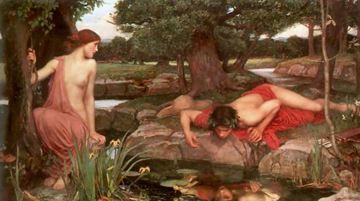

Summary of Ovid's Metamorphosis

Book 3: Narcissus and Echo
The first to seek Tiresias' guidance was a water nymph enquiring about her son's future.
Tiresias told her that her son, Narcissus, would live a long and happy life as long as he
did not know himself. When Narcissus was 16, he was out in the woods and a nymph, Echo,
saw him. She fell in love with him, but she could not call out to him because Juno had
reduced her powers of speech to only repetition because the nymph used to stall her with
conversation while Jove and the other nymphs escaped from her. So when Narcissus called
out to his friends, Echo answered him with the last words that he cried. The played the
game back and forth, and he was intrigued, so she ran out of the cover of the woods and
wrapped her arms around him, but he pushed her away.
He rejected her, and she was so crushed, that she returned to the woods and pined away
until all that was left of her was her voice.
Narcissus was scornful of all that loved him, and one day a rejected lover wished that the
boy would know the sting of unattainable love. Not long after that, Narcissus saw his own
reflection in a pool of water and fell helplessly in love with it. But each time he
reached out to hold it or kiss it, it slipped away from him. He pined away for this
evasive love until he realized that it was his reflection. Distraught at the impossibility
of ever reaching the object that he loved so dearly, the boy died. When the nymphs came to
bury his body, they found only the flower that now bears his name, the narcissus.